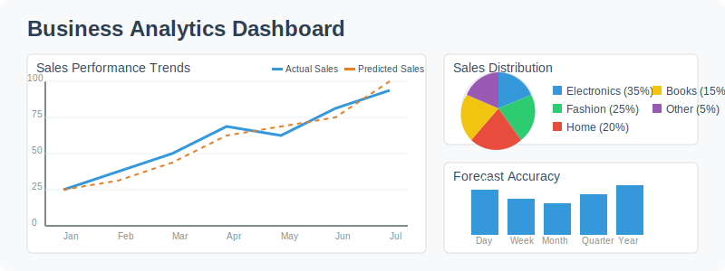

Challenge d'amélioration de modèle pour une application métier

Objectif du challenge
Lors de cette phase, vous allez travailler en équipe sur un challenge d'amélioration de modèle qui simule une situation réelle en entreprise. Vous prendrez le rôle d'un stagiaire en informatique chargé d'optimiser un système de prédiction existant mais sous-performant.
Durée: 45 minutes
Contexte professionnel: Vous effectuez un stage dans une entreprise de commerce en ligne qui souhaite améliorer son système de prévision des ventes. Un modèle de base a été développé, mais ses performances sont insuffisantes. Votre mission est de diagnostiquer les problèmes et d'améliorer ce modèle.
Téléchargement des ressources
Tous les fichiers nécessaires pour réaliser ce challenge sont disponibles ci-dessous :
Structure du projet
challenge-prevision-ventes/
├── sales_prediction_improvement.ipynb # Notebook principal à compléter
├── data_utils.py # Utilitaires pour le traitement des données
├── visualization.py # Fonctions de visualisation
└── visualize_utils.py # Fonctions auxiliaires pour les visualisations
Fichiers à télécharger
- sales_prediction_improvement.ipynb - Notebook principal contenant le modèle à améliorer
- data_utils.py - Utilitaires pour le traitement des données
- visualization.py - Fonctions de visualisation des résultats
- visualize_utils.py - Fonctions auxiliaires pour les visualisations
Instructions
Étape 1: Briefing et prise en main (5 min)
- Formez des équipes de 1-2 personnes
- Téléchargez les fichiers individuellement ou le dossier ZIP complet
- Ouvrez le notebook Jupyter
sales_prediction_improvement.ipynbdans Google Colab - Vous pouvez l'ouvrir directement via ce lien : Ouvrir dans Colab
- Ou le télécharger puis l'importer dans Colab
Le dataset contient les données de ventes historiques avec les caractéristiques suivantes:
- Date de la vente
- Catégorie de produit
- Prix
- Remise appliquée
- Quantité vendue
- Jour de la semaine
- Indicateur de période promotionnelle
- Données météorologiques du jour
Étape 2: Diagnostic du modèle existant (10 min)
Le notebook contient un modèle de prévision des ventes sous-optimal avec une erreur moyenne (RMSE) trop élevée. Votre tâche consiste à:
- Exécuter les cellules d'initialisation et d'analyse exploratoire des données
- Examiner l'architecture du modèle de base (un réseau de neurones simple)
- Analyser les métriques d'erreur et les prédictions sur le graphique
- Identifier les périodes ou catégories où le modèle performe le moins bien
- Documenter vos observations dans la section "Diagnostic" du notebook
Étape 3: Amélioration du modèle (20 min)
Modifiez le modèle pour améliorer ses performances en appliquant vos connaissances de Deep Learning. Vous pouvez:
- Transformer le problème pour utiliser une architecture CNN ou RNN plus adaptée
- Ajouter des caractéristiques temporelles pertinentes (tendance, saisonnalité)
- Modifier l'architecture du réseau (couches, neurones, fonctions d'activation)
- Implémenter des techniques d'apprentissage avancées (régularisation, normalisation)
- Ajuster les hyperparamètres (taux d'apprentissage, batch size, optimiseur)
Pour chaque modification:
- Documentez votre hypothèse ("Nous pensons que cette modification améliorera les performances car...")
- Implémentez le changement et mesurez l'impact
- Analysez les résultats (RMSE globale et par catégorie de produit)
Étape 4: Préparation d'une solution professionnelle (10 min)
Votre responsable vous demande une présentation concise de vos résultats pour la réunion de service. Préparez:
- Un résumé des problèmes identifiés dans le modèle initial
- Une explication des améliorations apportées (avec justifications techniques)
- Une démonstration des gains de performance (avec visualisations)
- Une estimation de l'impact business (réduction des stocks, meilleure planification)
- Des recommandations pour améliorer davantage le système
Livrables attendus
Votre équipe doit produire:
- Le notebook complété avec vos améliorations et leur justification
- Une présentation de 3 minutes maximum (3-4 slides) destinée à l'équipe métier
- Un tableau récapitulatif des expérimentations et de leurs résultats
Critères d'évaluation
| Critère | Description |
|---|---|
| Pertinence du diagnostic | Avez-vous correctement identifié les faiblesses du modèle initial? |
| Qualité technique des améliorations | Les modifications apportées sont-elles pertinentes et bien implémentées? |
| Amélioration effective des performances | Dans quelle mesure avez-vous réduit l'erreur de prédiction? |
| Présentation professionnelle | Clarté de l'explication et pertinence business des résultats |
| Travail d'équipe | Organisation, répartition des tâches et collaboration |
Applications en stage de 1ère année
Ce challenge simule des situations courantes que vous pourriez rencontrer en stage:
- Analyse de données commerciales: De nombreuses entreprises cherchent à mieux comprendre leurs données de vente
- Optimisation de systèmes existants: Il est fréquent qu'on vous demande d'améliorer un système plutôt que d'en créer un nouveau
- Communication des résultats techniques: La capacité à expliquer clairement des concepts techniques à une audience non technique est très valorisée
- Évaluation de l'impact business: Comprendre comment une amélioration technique se traduit en avantage concurrentiel ou économique
Conseils pour réussir
- Commencez par l'analyse des données: Comprendre les patterns dans les données est souvent plus important que d'avoir un modèle complexe
- Privilégiez l'approche métier: Concentrez-vous sur les aspects qui ont le plus d'impact business (ex: prévoir correctement les pics de vente)
- Documentez votre démarche: En entreprise, la compréhension et la maintenance du code sont essentielles
- Équilibrez théorie et pratique: Les meilleures solutions combinent les connaissances théoriques du Deep Learning avec des considérations pratiques du monde réel
- Pensez à l'exploitation réelle: Comment votre modèle s'intégrerait-il dans les systèmes d'information de l'entreprise?
Collaboration
Pendant ce challenge, n'hésitez pas à collaborer au sein de votre équipe en vous répartissant les tâches : par exemple, une personne peut se concentrer sur la préparation des données pendant que l'autre travaille sur l'architecture du modèle.
Bonne chance à toutes les équipes!
Retour à la vue d'ensemble de la Séance 2 Continuer vers la Séance 3